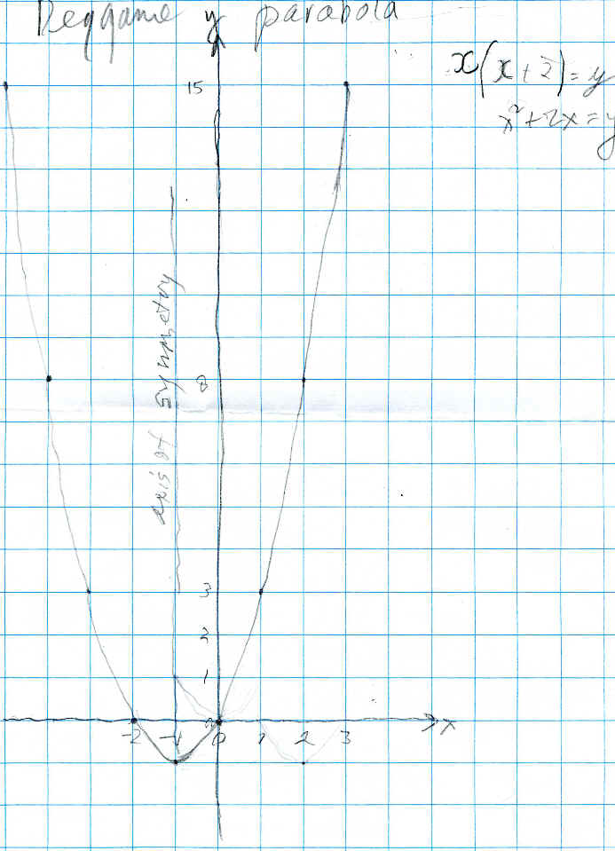

Shaleen moves a parabola and something else happens!
Shaleen graphed the function x(x+2)=y which was derived from the Shuttle Puzzle or Peg Game (see chapter 6, #3 in Don's sample problems):

In the process Don had him get points where the x-coordinates were negative and he was able to do that. He also noted that the curve (a parabola) was symmetrical, and the equation for the axis of symmetry was x=-1. Then Don asked Shaleen to move this graph 2 units to the right and write the equation. His graph with the equations he figured out is shown below:
Shaleen ended up with 2 straight lines, instead of the curve. The equation for right side he found was x- 3 = y, and Don suggested that x > or = to 2 had to be added; the equation he found for the left side of his graph was x + y = 1, again Don suggested x < or = 2, otherwise he would not have one piece like the parabola. Don also showed Shaleen the absolute value function |x|=y, and his graph could be written in terms of the absolute value as | x - 2 | - 1 = y. They looked at what Shaleen did here, and the parabola, and saw the differences between the 2 functions.
Fine job Shaleen!
This is an example of the student getting an answer that doesn't work, and instead of just telling the student he is wrong, the teacher has the student see that his result gives some new mathematics, which is important!
Now we can look at the equations that Julia and Kathryn found to move the Peg Game parabola:
Below Don wrote the equation or function for the the Peg Game parabola in the vertex form (in orange) and shows, for himself, that this is equivalent to the what we all get x(x+2) = y; then he wrote the equation of parabola that's moved 2 units to the right in vertex form and shows that is equivalent to what Julia and Kathryn obtained.
The vertex form of the parabola is a(x - h)2 + k = y, where a is the coefficient of the x2 term, h is the x-coordinate of the vertex (the lowest or highest point of the parabola) and k is the y-coordinate of the vertex. For the Peg Game equation a=1, h=-1, and k=-1, shown above.
For the Peg Game function, the input or x is the number of pairs of pegs, and the output or y, is the number of moves to interchange the colored pegs. One gets 1->3 (one pair of pegs takes 3 moves to interchange the colored pegs), 2->8=2*4, 3->15=3*5, and 4->24=4*6. From these pairs of numbers and the pattern, it's relatively easy to see that 1->1*(1+2) =3 and 2->2*(2+2)=8, and 3->3*(3+2)=15 and x-> x*(x+2). Julia showed Don that for the shifted parabola, 5->15=5*(5-2) and therefore found the function to be x*(x-2).
Fine job Julia and Kathryn!